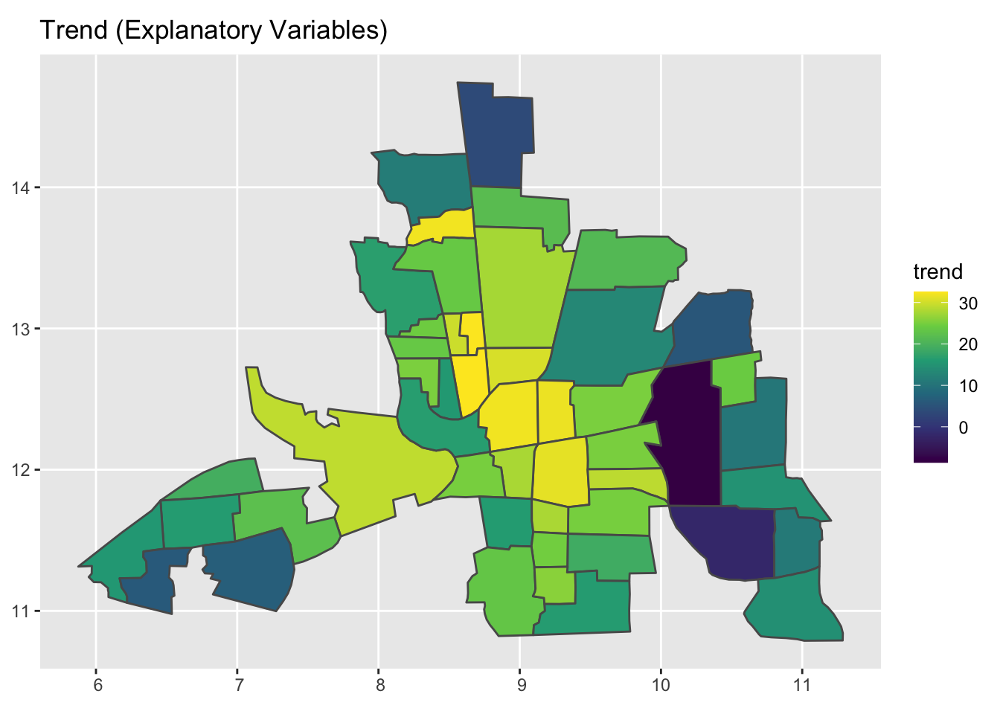
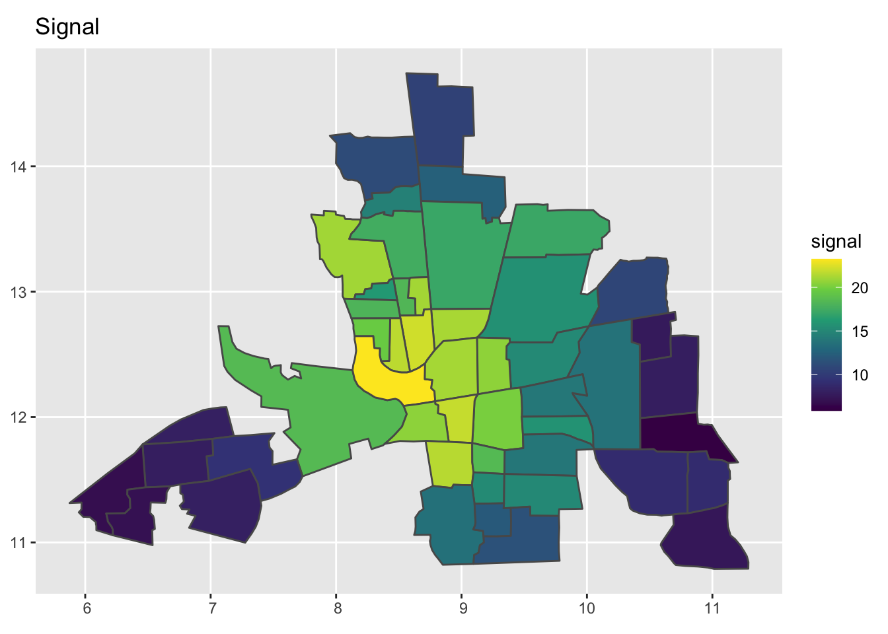
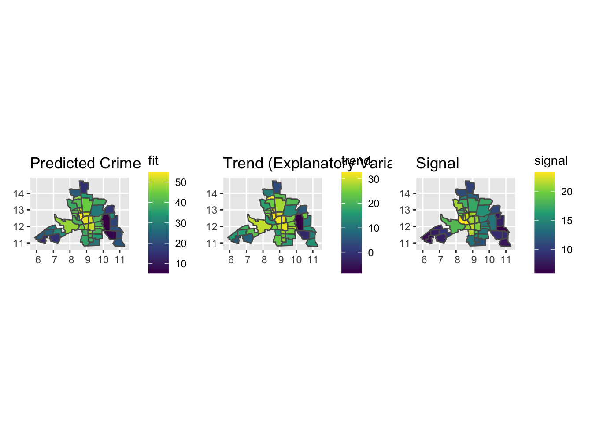
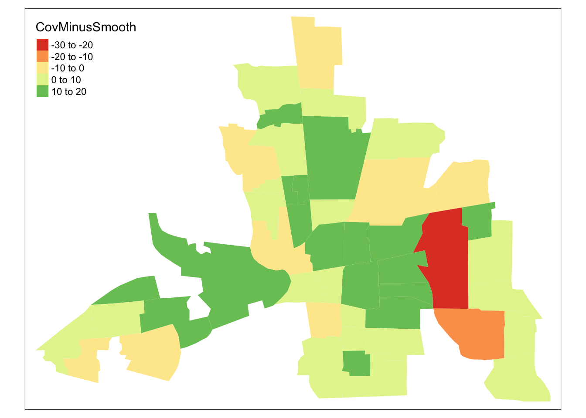

Tuesday November 29, 2022
- Estimating spatial autocorrelation in model residuals
- Choosing a spatial regression model
- Fitting and interpreting spatial regression models
Estimating spatial autocorrelation in model residuals
Previous focus has been on estimating the amount of spatial autocorrelation in a variable aggregated at some areal-unit level. You saw examples of crime rates and police expenditures aggregated at the county level. This is important for hot-spot analysis or spatial sampling.
However, if you want a model for a response variable as a function of explanatory variables across a set of areal units then focus shifts to estimating the spatial autocorrelation in the model residuals.
The model of first choice is a linear regression, but when the residuals from a linear regression model exhibit significant spatial autocorrelation then you should consider a spatial regression model.
So the workflow starts by fitting an OLS regression model where you regress the response variable onto the explanatory variables. You then check for spatial autocorrelation in the residuals.
Consider again the crime data at the tract level in the city of Columbus, Ohio.
CC.sf <- sf::st_read(dsn = here::here("data", "columbus"),
layer = "columbus")## Reading layer `columbus' from data source
## `/Users/jelsner/Desktop/ClassNotes/QG-2022/data/columbus' using driver `ESRI Shapefile'
## Simple feature collection with 49 features and 20 fields
## Geometry type: POLYGON
## Dimension: XY
## Bounding box: xmin: 5.874907 ymin: 10.78863 xmax: 11.28742 ymax: 14.74245
## CRS: NACRIME is the response variable and INC and HOVAL are the explanatory variables. The data are aggregated to census tracts. How well do these two explanatory variables statistically explain the amount of crime at the tract level?
An answer to this question is obtained by regressing crime onto income and housing values. Here you use the lm() function and save the results to the object model.lm.
Set the formula assigning it to the object f, then use the formula as the first argument in the lm() function. Summarize the results with the summary() method.
f <- CRIME ~ INC + HOVAL
model.lm <- lm(f,
data = CC.sf)
model.lm |>
summary()##
## Call:
## lm(formula = f, data = CC.sf)
##
## Residuals:
## Min 1Q Median 3Q Max
## -34.418 -6.388 -1.580 9.052 28.649
##
## Coefficients:
## Estimate Std. Error t value Pr(>|t|)
## (Intercept) 68.6190 4.7355 14.490 < 2e-16 ***
## INC -1.5973 0.3341 -4.780 1.83e-05 ***
## HOVAL -0.2739 0.1032 -2.654 0.0109 *
## ---
## Signif. codes: 0 '***' 0.001 '**' 0.01 '*' 0.05 '.' 0.1 ' ' 1
##
## Residual standard error: 11.43 on 46 degrees of freedom
## Multiple R-squared: 0.5524, Adjusted R-squared: 0.5329
## F-statistic: 28.39 on 2 and 46 DF, p-value: 9.341e-09The output shows that the linear regression model statistically explains 55% of the variation in crime.(multiple R-squared).
Looking at the coefficients (values under the Estimate column), you see that higher incomes are associated with lower values of crime (negative coefficient) and higher housing values are associated with lower crime. The marginal effect of income on crime is -1.6 and the marginal effect of housing value on crime is -.27.
The extractor function residuals() is used to get the model residuals as a vector object.
( res <- model.lm |>
residuals() )## 1 2 3 4 5 6
## 0.3465419 -3.6947990 -5.2873940 -19.9855151 6.4475490 -9.0734793
## 7 8 9 10 11 12
## -34.4177224 -1.9146840 4.3960594 13.5091017 10.9800573 9.5877236
## 13 14 15 16 17 18
## 4.7728320 16.1128397 0.6675424 3.5491565 -4.6630963 12.8399569
## 19 20 21 22 23 24
## 12.8428644 3.4948724 -6.0537589 -7.8697868 -1.7037730 6.9913819
## 25 26 27 28 29 30
## 11.0984343 -9.1741523 10.8026296 7.1086321 14.9005133 28.6487456
## 31 32 33 34 35 36
## -15.1722792 -8.1776706 -4.3438864 -12.9749799 -1.5798172 -14.4376850
## 37 38 39 40 41 42
## 12.8687861 9.0515532 -9.1569014 12.2449674 -2.7098171 1.3443547
## 43 44 45 46 47 48
## -3.5432909 -6.3880045 -9.4155428 -1.9731210 1.1150296 -15.7632989
## 49
## -6.2476690There are 49 residuals, one for each tract. The residuals are the difference between the observed crime rates and the predicted crime rates (observed - predicted). A residual that has a value greater than 0 indicates that the model under predicts the observed crime rate in that tract and a residual that has a value less than 0 indicates that the model over predicts the observed crime rate.
Inferences made about the relationships between the response and explanatory variables are valid under the assumption that the residuals can be adequately described by a normal distribution. You check this with the sm::sm.density() function with the first argument the vector of residuals (res) and the argument model = "Normal".
res |>
sm::sm.density(model = "Normal")
The density curve of the residuals (black line) fits within the blue ribbon that defines a normal distribution, so there is no evidence against normally distributed residuals.
Next create a map of the model residuals. Do the residuals show any pattern of clustering?
Key point: The values in the vector of residuals res are arranged in the same order as the rows in the simple feature data frame.
So you create a new column in the simple feature data frame using the $ syntax calling the new column res. Now the residuals are aligned with the corresponding simple feature geometry defining the tract boundary.
CC.sf$res <- res
CC.sf |>
head()## Simple feature collection with 6 features and 21 fields
## Geometry type: POLYGON
## Dimension: XY
## Bounding box: xmin: 7.950089 ymin: 12.86109 xmax: 10.1806 ymax: 14.74245
## CRS: NA
## AREA PERIMETER COLUMBUS_ COLUMBUS_I POLYID NEIG HOVAL INC CRIME
## 1 0.309441 2.440629 2 5 1 5 80.467 19.531 15.72598
## 2 0.259329 2.236939 3 1 2 1 44.567 21.232 18.80175
## 3 0.192468 2.187547 4 6 3 6 26.350 15.956 30.62678
## 4 0.083841 1.427635 5 2 4 2 33.200 4.477 32.38776
## 5 0.488888 2.997133 6 7 5 7 23.225 11.252 50.73151
## 6 0.283079 2.335634 7 8 6 8 28.750 16.029 26.06666
## OPEN PLUMB DISCBD X Y NSA NSB EW CP THOUS NEIGNO
## 1 2.850747 0.217155 5.03 38.80 44.07 1 1 1 0 1000 1005
## 2 5.296720 0.320581 4.27 35.62 42.38 1 1 0 0 1000 1001
## 3 4.534649 0.374404 3.89 39.82 41.18 1 1 1 0 1000 1006
## 4 0.394427 1.186944 3.70 36.50 40.52 1 1 0 0 1000 1002
## 5 0.405664 0.624596 2.83 40.01 38.00 1 1 1 0 1000 1007
## 6 0.563075 0.254130 3.78 43.75 39.28 1 1 1 0 1000 1008
## geometry res
## 1 POLYGON ((8.624129 14.23698... 0.3465419
## 2 POLYGON ((8.25279 14.23694,... -3.6947990
## 3 POLYGON ((8.653305 14.00809... -5.2873940
## 4 POLYGON ((8.459499 13.82035... -19.9855151
## 5 POLYGON ((8.685274 13.63952... 6.4475490
## 6 POLYGON ((9.401384 13.5504,... -9.0734793Now you make two maps using the functions from the {tmap} package, one showing the crime rates and the other showing the residuals from the linear model of crime.
tmap::tm_shape(CC.sf) +
tmap::tm_fill(col = c("CRIME", "res"), title = "") +
tmap::tm_borders(col = "gray70") +
tmap::tm_layout(title = c("Crime rate",
"Linear model residuals"))## Warning: Currect projection of shape CC.sf unknown. Long-lat (WGS84) is assumed.## Variable(s) "res" contains positive and negative values, so midpoint is set to 0. Set midpoint = NA to show the full spectrum of the color palette.
As you saw last time, crime rates tend to cluster. Residuals from a model of crime also show some clustering. Tracts with negative residuals are noted across the southwestern and southern part of the city and a group of tracts with positive residuals toward the center.
Clustering in the residuals appears to be less than with the crime values themselves. That is, after accounting for regional factors related to crime, the autocorrelation is reduced.
To determine the amount of spatial autocorrelation in crime use the spdep::moran.test() function after specifying the neighborhood topology and the weights. Here you use the default queen contiguity and row standardized weights.
nbs <- CC.sf |>
spdep::poly2nb()
wts <- nbs |>
spdep::nb2listw()
CC.sf$CRIME |>
spdep::moran.test(listw = wts)##
## Moran I test under randomisation
##
## data: CC.sf$CRIME
## weights: wts
##
## Moran I statistic standard deviate = 5.5894, p-value = 1.139e-08
## alternative hypothesis: greater
## sample estimates:
## Moran I statistic Expectation Variance
## 0.500188557 -0.020833333 0.008689289To determine the amount of autocorrelation in the model residuals use the spdep::lm.morantest() function, passing the regression model object and the weights object to it.
model.lm |>
spdep::lm.morantest(listw = wts)##
## Global Moran I for regression residuals
##
## data:
## model: lm(formula = f, data = CC.sf)
## weights: wts
##
## Moran I statistic standard deviate = 2.8393, p-value = 0.00226
## alternative hypothesis: greater
## sample estimates:
## Observed Moran I Expectation Variance
## 0.222109407 -0.033418335 0.008099305Moran’s I on the model residuals is .22. This compares with the value of .5 on the value of crime alone. This is what you might have expected given the maps of crime and the residuals.
Part of the autocorrelation in the crime rates is statistically ‘absorbed’ by the explanatory factors.
The \(p\)-value on I of .002, thus you reject the null hypothesis of no spatial autocorrelation in the model residuals and conclude that a spatial regression model would be an improvement over the non-spatial OLS model. The \(z\)-value (as the basis for the \(p\)-value) takes into account the fact that these are residuals from a model so the variance is adjusted accordingly.
Given significant spatial autocorrelation in the model residuals, the next step is to choose the type of spatial regression model.
Choosing a spatial regression model
Linear regression models fit to spatial data can lead to improper inference because observations are not independent. This might lead to poor policy decisions. If the residuals from a linear model are strongly correlated the model is not specified properly.
You can try to improve the model by adding variables. If that’s not possible (no additional data, or no clue as to what variable to include), you can try a spatial regression model. Spatial regression models are widely used in econometrics and epidemiology.
The equation for a regression model in vector notation is
\[ y = X \beta + \varepsilon \]
where \(y\) is a \(n\) by 1 vector of response variable values, \(X\) is a \(n\) by \(p+1\) matrix containing the explanatory variables and augmented by a column of ones for the intercept term, \(\beta\) is a \(p+1\) \(\times\) 1 vector of model coefficients and \(\varepsilon\) is a \(n\) by 1 vector of residuals (iid: independent and identically distributed).
A couple options exist if the elements of the vector \(\varepsilon\) are correlated. One is to include a spatial lag term so the model becomes
\[ y = \rho W y + X \beta + \varepsilon \]
where \(Wy\) is the weighted average of the neighborhood response values with \(W\) the spatial weights matrix, and \(\rho\) is the autoregression coefficient. This is called a spatial autoregressive (SAR) model.
Note: \(Wy\) is the spatial lag variable you compute with the spdep::lag.listw() function and \(\rho\) is Moran’s I. Thus the model is also called a spatial lag model (SLM).
Justification for the spatial lag model comes from domain specific but is motivated by a ‘diffusion’ process. The response variable \(y_i\) is influenced by the explanatory variables at location \(i\) and by explanatory variables at locations \(j\).
\(\rho Wy\) is called the spatial signal term and \(\beta X\) is called the trend term.
Another option is to include a spatial error term so the model becomes
\[ y = X\beta + \lambda W \epsilon + u \]
where \(\lambda\) is the autoregression coefficient, \(W\epsilon\) is the spatial error term representing the weighted average of the neighborhood residuals, and \(u\) are the overall residuals assumed to be iid. This is called a spatial error model (SEM).
Here the lag term is computed using the residuals rather the response variable.
Application of the spatial error model is motivated by the omitted (unobserved) variable bias. Examples of unobservable (latent) variables include local culture, social capital, neighborhood readiness.
Importantly you would expect the latent variable to be spatially correlated (e.g., culture will be similar across neighborhoods). Another motivation for considering a spatial error model is heterogeneity.
In the absence of domain-specific knowledge of the process that might be responsible for the spatially autocorrelated residuals, you can run statistical tests on the linear model.
The tests are performed with the spdep::lm.LMtests() function. The LM stands for ‘Lagrange multiplier’ indicating that the technique simultaneously determines the coefficients on the explanatory variables AND the coefficient on the spatial lag variable.
The test type is specified as a character string. The tests should be considered in a sequence starting with the standard versions and moving to the ‘robust’ versions if the choice is ambiguous based on the standard versions.
To perform LM tests you specify the model object, the weights matrix, and the two model types using the test = argument. The model types are specified as character strings "LMerr" and "LMlag" for the spatial error and lag models, respectively.
model.lm |>
spdep::lm.LMtests(listw = wts,
test = c("LMerr", "LMlag"))##
## Lagrange multiplier diagnostics for spatial dependence
##
## data:
## model: lm(formula = f, data = CC.sf)
## weights: wts
##
## LMerr = 5.2062, df = 1, p-value = 0.02251
##
##
## Lagrange multiplier diagnostics for spatial dependence
##
## data:
## model: lm(formula = f, data = CC.sf)
## weights: wts
##
## LMlag = 8.898, df = 1, p-value = 0.002855The output shows that both the spatial error and spatial lag models are significant (\(p\)-value < .15). Ideally one model is significant and the other is not, and you choose the model that is significant.
Since both are significant, you test again. This time you use the robust forms of the statistics with character strings "RLMerr" and "RLMlag" in the test = argument.
model.lm |>
spdep::lm.LMtests(listw = wts,
test = c("RLMerr", "RLMlag"))##
## Lagrange multiplier diagnostics for spatial dependence
##
## data:
## model: lm(formula = f, data = CC.sf)
## weights: wts
##
## RLMerr = 0.043906, df = 1, p-value = 0.834
##
##
## Lagrange multiplier diagnostics for spatial dependence
##
## data:
## model: lm(formula = f, data = CC.sf)
## weights: wts
##
## RLMlag = 3.7357, df = 1, p-value = 0.05326Here the error model has a large \(p\)-value and the lag model has a \(p\)-value that is less than .15 so you choose the lag model for your spatial regression.
A decision tree (from Luc Anselin) shows the sequence of tests for making a choice about which type of spatial model to use Decision Tree
{kind=link}
If both tests show significant models, then you should fit both models and check which one gives the lowest information criteria (AIC). Another options is to include both a spatial lag term and a spatial error term into a single model.
Fitting and interpreting spatial regression models
Recall that the marginal effect of income on crime is -1.6 and the marginal effect of housing value on crime is -.27.
model.lm##
## Call:
## lm(formula = f, data = CC.sf)
##
## Coefficients:
## (Intercept) INC HOVAL
## 68.6190 -1.5973 -0.2739A nice way to visualize the relative significance of the explanatory variables is to make a plot. Here you use the broom::tidy() method and then ggplot() as follows.
if(!require(broom)) install.packages(pkgs = "broom", repos = "http://cran.us.r-project.org")## Loading required package: broomlibrary(broom)
( d <- broom::tidy(model.lm,
conf.int = TRUE) )## # A tibble: 3 × 7
## term estimate std.error statistic p.value conf.low conf.high
## <chr> <dbl> <dbl> <dbl> <dbl> <dbl> <dbl>
## 1 (Intercept) 68.6 4.74 14.5 9.21e-19 59.1 78.2
## 2 INC -1.60 0.334 -4.78 1.83e- 5 -2.27 -0.925
## 3 HOVAL -0.274 0.103 -2.65 1.09e- 2 -0.482 -0.0662library(ggplot2)
ggplot(d[-1,], aes(x = estimate, # do not plot the intercept term
y = term,
xmin = conf.low,
xmax = conf.high,
height = 0)) +
geom_point(size = 2) +
geom_vline(xintercept = 0, lty = 4) +
geom_errorbarh()
The two explanatory variables are plotted on the vertical axis. The marginal effect estimate is shown as a point and the confidence interval around the estimate is shown as a horizontal error bar. The default confidence level is 95% (conf.level = .95). The effects are statistically significant as the confidence intervals do not intersect the zero line (dashed-dotted vertical line).
But you’ve shown above that the model residuals have significant spatial autocorrelation so reporting the marginal effects with this regression model is incorrect.
Instead, you fit a spatially-lagged Y model using the lagsarlm() function from the {spatialreg} package. The model is
\[ y = \rho W y + X \beta + \varepsilon \]
where \(Wy\) is the weighted average of the neighborhood response values (spatial lag variable) with \(W\) the spatial weights matrix, and \(\rho\) is the autoregression coefficient.
The spatialreg::lagsarlm() function first determines a value for \(\rho\) ( with the internal optimize() function) and then the \(\beta\)’s are obtained using generalized least squares (GLS). The model formula f is the same as what you used to fit the linear regression model above. You save the model object as model.slym.
if(!require(spatialreg)) install.packages(pkgs = "spatialreg", repos = "http://cran.us.r-project.org")## Loading required package: spatialreg## Loading required package: spData## Loading required package: Matrix## Loading required package: sf## Linking to GEOS 3.10.2, GDAL 3.4.2, PROJ 8.2.1; sf_use_s2() is TRUEmodel.slym <- spatialreg::lagsarlm(formula = f,
data = CC.sf,
listw = wts)
model.slym |>
summary()##
## Call:spatialreg::lagsarlm(formula = f, data = CC.sf, listw = wts)
##
## Residuals:
## Min 1Q Median 3Q Max
## -37.652017 -5.334611 0.071473 6.107196 23.302618
##
## Type: lag
## Coefficients: (asymptotic standard errors)
## Estimate Std. Error z value Pr(>|z|)
## (Intercept) 45.603250 7.257404 6.2837 3.306e-10
## INC -1.048728 0.307406 -3.4115 0.000646
## HOVAL -0.266335 0.089096 -2.9893 0.002796
##
## Rho: 0.42333, LR test value: 9.4065, p-value: 0.0021621
## Asymptotic standard error: 0.11951
## z-value: 3.5422, p-value: 0.00039686
## Wald statistic: 12.547, p-value: 0.00039686
##
## Log likelihood: -182.674 for lag model
## ML residual variance (sigma squared): 96.857, (sigma: 9.8416)
## Number of observations: 49
## Number of parameters estimated: 5
## AIC: 375.35, (AIC for lm: 382.75)
## LM test for residual autocorrelation
## test value: 0.24703, p-value: 0.61917The first batch of output concerns the model residuals and the coefficients on the explanatory variables. Again, the model residuals are the observed crime rates minus the predicted crime rates.
The coefficients on income and housing have the same sign (negative) and they remain statistically significant (-1.05 for income and -.27 for housing value). But you can’t interpret these coefficients as marginal effects.
The next set of output is about the coefficient of spatial autocorrelation (\(\rho\)). The value is .423 and a likelihood ratio test gives a value of 9.41 which translates to a \(p\)-value of .002. The null hypothesis is the autocorrelation is zero, so you confidently reject it. This is consistent with the significant Moran’s I value that you found in the linear model residuals.
Two other tests are performed on the value of \(\rho\) including a z-test (t-test) using the asymptotic standard error. Both tests confirm that the lag term should be included in the model for crime.
In spatial models that contain a lagged response term, the coefficients are not marginal effects. The spatial lag model allows for ‘spillover’. That is a change in an explanatory variable anywhere in the study domain will affect the value of the response variable everywhere. Spillover occurs even when the neighborhood weights matrix represents local contiguity. The spillover makes interpreting the coefficients more complicated.
With a spatially-lagged Y model a change in the value of an explanatory variable results in both direct and indirect effects on the response variable. For example, the direct effect gives the impact a change in income has on crime averaged over all tracts. It takes into account the effects that occur from a change in the \(i\)th tract’s income on crime across neighboring tracts.
The indirect effect gives the impact of a change in income has on crime averaged over all other tracts. The indirect effect represent spillovers. The influences on the dependent variable \(y\) in a region rendered by change in \(x\) in some other region. For example, if all tracts \(i \ne j\) (i not equal to j) increase their income, what will be the impact on crime in region \(i\)?
The total effect (TE) is the sum of the direct and indirect effects. It measures the total cumulative impact on crime arising from one tract \(j\) increasing its income over all other tracts (on average). It is given by
\[ \hbox{TE} = \left(\frac{\beta_k}{1-\rho^2}\right)\left(1 + \rho\right) \]
where \(\beta_k\) is the effect of variable \(k\) and \(\rho\) is the spatial autocorrelation coefficient. With \(\rho = 0\) TE is \(\beta_k\).
Here \(\beta_{INC}\) is -1.0487 and \(\rho\) is .4233, so the total effect is
( TE_INC <- -1.0487 / (1 - .4233^2) * (1 + .4233) )## [1] -1.81845The direct, indirect, and total effects are shown using the spatialreg::impacts() function.
model.slym |>
spatialreg::impacts(listw = wts)## Impact measures (lag, exact):
## Direct Indirect Total
## INC -1.1008955 -0.7176833 -1.8185788
## HOVAL -0.2795832 -0.1822627 -0.4618459The direct effects are the changes in the response variable of a particular region arising from a one unit increase in an explanatory variable in that region.
The indirect effects are the changes in the response variable of a particular region arising from a one unit increase in an explanatory variable in another region. For example, due to spatial autocorrelation, a one-unit change in the income variable in region 1 affects the crime rate in regions 2 and 3.
The next set of output concerns the overall model fit. It includes the log likelihood value and the AIC (Akaike Information Criterion). The AIC value for the linear model is included. Here it is clear that the spatial lag model is an improvement (smaller AIC) over the aspatial model.
The larger the likelihood, the better the model and two times the difference in log likelihoods from two competing models divided by the number of observations gives a scale for how much improvement.
x <- 2 * (logLik(model.slym) - logLik(model.lm))/49
x[1]## [1] 0.1919701Improvement table
| Likelihood difference | Qualitative improvement |
|---|---|
| 1 | huge |
| .1 | large |
| .01 | good |
| .001 | okay |
The final bit of output is a Lagrange multiplier test for remaining autocorrelation. The null hypothesis is there is no remaining autocorrelation since we have a lag term in the model. The result is a high \(p\)-value so you are satisfied that the lag term takes care of the autocorrelation.
Compare the spatial lag model to a spatial error model. Here you use the spatialreg::errorsarlm() function.
model.sem <- spatialreg::errorsarlm(formula = f,
data = CC.sf,
listw = wts)
summary(model.sem)##
## Call:spatialreg::errorsarlm(formula = f, data = CC.sf, listw = wts)
##
## Residuals:
## Min 1Q Median 3Q Max
## -34.65998 -6.16943 -0.70623 7.75392 23.43878
##
## Type: error
## Coefficients: (asymptotic standard errors)
## Estimate Std. Error z value Pr(>|z|)
## (Intercept) 60.279469 5.365594 11.2344 < 2.2e-16
## INC -0.957305 0.334231 -2.8642 0.0041806
## HOVAL -0.304559 0.092047 -3.3087 0.0009372
##
## Lambda: 0.54675, LR test value: 7.2556, p-value: 0.0070679
## Asymptotic standard error: 0.13805
## z-value: 3.9605, p-value: 7.4786e-05
## Wald statistic: 15.686, p-value: 7.4786e-05
##
## Log likelihood: -183.7494 for error model
## ML residual variance (sigma squared): 97.674, (sigma: 9.883)
## Number of observations: 49
## Number of parameters estimated: 5
## AIC: 377.5, (AIC for lm: 382.75)You find the coefficient of spatial autocorrelation (\(\lambda\)) is significant, but the log likelihood value from the model is smaller (-183.7) and the AIC value is larger (377.5) compared with corresponding values from the lag model. This is consistent with the Lagrange multiplier (LM) tests indicating the spatial lag model is more appropriate.
Also you can compare the log likelihoods from the two spatial regression models that you fit.
x <- 2 * (logLik(model.slym) - logLik(model.sem))/49
x[1]## [1] 0.04389617With a value of .04 you conclude that there is good improvement of the lag model over the error model. Again, this is consistent with your decision above to use the lag model.
With the spatial error model the coefficients can be interpreted as marginal effects like with the linear model.
If there are large differences (e.g., different signs) between the coefficient estimate from SEM and the linear model, this suggests that neither model is yielding parameters estimates matching the underlying parameters of the data generating process.
You test whether there is a significant difference in coefficient estimates with the Hausman test under the hypothesis of no difference.
model.sem |>
spatialreg::Hausman.test()##
## Spatial Hausman test (asymptotic)
##
## data: NULL
## Hausman test = 5.6132, df = 3, p-value = 0.132The \(p\)-value gives inconclusive evidence that the coefficients are different and that maybe the SEM is not the right way to proceed with these data.
The predict() method implements the predict.sarlm() function to calculate predictions from the spatial regression model. The prediction on a spatial lag Y model is decomposed into a “trend” term (explanatory variable effect) and a “signal” term (spatial smoother). The predicted fit is the sum of the trend and the signal terms when using the spatial lag model.
You make predictions with the predict() method under the assumption that the mean response is known. You examine the structure of the corresponding predict object.
( predictedValues <- predict(model.slym) )## This method assumes the response is known - see manual page## fit trend signal
## 1 14.151553 3.689376 10.462177
## 2 22.577864 11.466910 11.110954
## 3 34.302562 21.851821 12.450741
## 4 46.732511 32.065778 14.666733
## 5 44.747335 27.617335 17.130001
## 6 38.333111 21.136061 17.197049
## 7 37.830286 16.778971 21.051314
## 8 41.393775 23.826139 17.567636
## 9 28.792040 13.151106 15.640934
## 10 16.390116 5.667968 10.722148
## 11 53.631524 32.525601 21.105923
## 12 48.074429 29.765567 18.308862
## 13 40.608933 24.482783 16.126150
## 14 41.856029 23.729007 18.127021
## 15 51.665885 30.455130 21.210754
## 16 54.767238 32.599604 22.167634
## 17 31.866732 24.208333 7.658399
## 18 37.461969 15.795681 21.666289
## 19 44.929428 25.269281 19.660147
## 20 5.110404 -8.624965 13.735369
## 21 47.617356 29.109014 18.508343
## 22 40.412907 25.213797 15.199111
## 23 18.640125 10.704444 7.935681
## 24 39.747460 16.504544 23.242917
## 25 53.116667 31.962568 21.154099
## 26 52.303708 31.717686 20.586022
## 27 39.228078 25.171897 14.056180
## 28 51.354572 31.278691 20.075881
## 29 49.767662 27.843360 21.924302
## 30 45.589426 25.027103 20.562323
## 31 27.465214 19.368347 8.096867
## 32 20.869990 15.004949 5.865041
## 33 44.697299 28.916463 15.780837
## 34 31.720868 22.349636 9.371232
## 35 38.985264 24.973807 14.011457
## 36 24.222607 16.283179 7.939428
## 37 37.811893 16.224746 21.587148
## 38 46.388525 27.909226 18.479299
## 39 22.524680 15.679043 6.845638
## 40 6.730001 -2.182900 8.912900
## 41 20.020878 11.101447 8.919431
## 42 14.764446 6.662086 8.102360
## 43 40.034408 24.726462 15.307946
## 44 34.026283 18.893555 15.132728
## 45 36.970894 23.393214 13.577680
## 46 13.189170 6.118277 7.070893
## 47 21.849812 14.410621 7.439191
## 48 38.162353 26.076852 12.085501
## 49 27.876102 16.356569 11.519533The predicted values are in the column labeled fit. The predicted values are a sum of the trend term (\(X\beta\)) and the signal term (\(\rho W y\)). The signal term is called the spatial smoother.
As a first-order check to see if things are what you think they should be, compare the first five predicted values with the corresponding observed values.
predictedValues[1:5]## 1 2 3 4 5
## 14.15155 22.57786 34.30256 46.73251 44.74734CC.sf$CRIME[1:5]## [1] 15.72598 18.80175 30.62678 32.38776 50.73151Some predicted values are lower than the corresponding observed values and some are higher.
The predicted values along with the values for the trend and signal are appended to the simple features data frame using the $ notation.
CC.sf$fit <- as.numeric(predictedValues)
CC.sf$trend <- attr(predictedValues, "trend")
CC.sf$signal <- attr(predictedValues, "signal")You plot the observed versus the predicted as a scatter plot with a y = x line and a best-fit regression line.
ggplot(data = CC.sf,
mapping = aes(x = CRIME, y = fit)) +
geom_point() +
geom_smooth(method = lm, se = FALSE, color = "red") +
geom_abline() +
scale_x_continuous(limits = c(0, 70)) +
scale_y_continuous(limits = c(0, 70)) +
xlab("Observed Crime") +
ylab("Predicted Crime")## `geom_smooth()` using formula 'y ~ x'
The components of the predictions are mapped and placed on the same plot.
( g1 <- ggplot() +
geom_sf(data = CC.sf, aes(fill = fit)) +
scale_fill_viridis_c() +
ggtitle("Predicted Crime") )
( g2 <- ggplot() +
geom_sf(data = CC.sf, aes(fill = trend)) +
scale_fill_viridis_c() +
ggtitle("Trend (Explanatory Variables)") )
( g3 <- ggplot() +
geom_sf(data = CC.sf, aes(fill = signal)) +
scale_fill_viridis_c() +
ggtitle("Signal") )
library(patchwork)
g1 + g2 + g3
The trend term and the spatial smoother have similar ranges indicating nearly equal contributions to the predictions. The largest difference between the two terms occurs in the city’s east side.
A map of the difference makes this clear.
CC.sf <- CC.sf |>
dplyr::mutate(CovMinusSmooth = trend - signal)
tmap::tm_shape(CC.sf) +
tmap::tm_fill(col = "CovMinusSmooth")## Warning: Currect projection of shape CC.sf unknown. Long-lat (WGS84) is assumed.## Variable(s) "CovMinusSmooth" contains positive and negative values, so midpoint is set to 0. Set midpoint = NA to show the full spectrum of the color palette.
How many tracts have a smaller residual with the lag model versus the OLS model?
CC.sf |>
dplyr::mutate(residualsL = CRIME - fit,
lagWins = abs(residuals(model.lm)) > abs(residualsL),
CovMinusSmooth = trend - signal) |>
sf::st_drop_geometry() |>
dplyr::summarize(N = sum(lagWins))## N
## 1 32In 32 out of the 49 tracts the residuals from the spatial model are smaller than the residuals from the OLS model.
Another spatial regression option is to modify the linear model to include spatially-lagged explanatory variables. This is called the spatially-lagged X model.
\[ y = X \beta + XW \theta + \varepsilon \]
In this case the weights matrix is (post) multiplied by the matrix of X variables where \(W\) is again the weights matrix and \(\theta\) is a vector of coefficients for each lagged explanatory variable.
Here you fit the spatially-lagged X model using the spatialreg::lmSLX() function and save the model object as model.slxm.
( model.slxm <- spatialreg::lmSLX(formula = f,
data = CC.sf,
listw = wts) )##
## Call:
## lm(formula = formula(paste("y ~ ", paste(colnames(x)[-1], collapse = "+"))),
## data = as.data.frame(x), weights = weights)
##
## Coefficients:
## (Intercept) INC HOVAL lag.INC lag.HOVAL
## 74.5534 -1.0974 -0.2944 -1.3987 0.2148With this model, beside the direct marginal effects of income and housing value on crime, you also have the spatially-lagged indirect effects.
The total effect of income on crime is the sum of the direct effect and indirect effect. And again, using the spatialreg::impacts() function you see this.
model.slxm |>
spatialreg::impacts(listw = wts)## Impact measures (SlX, estimable):
## Direct Indirect Total
## INC -1.0973898 -1.398746 -2.49613551
## HOVAL -0.2943898 0.214841 -0.07954881You get the impact measures and their standard errors, z-values and \(p\)-values with the summary() method applied to the output of the impacts() function.
summary(spatialreg::impacts(model.slxm, listw = wts))## Impact measures (SlX, estimable, n-k):
## Direct Indirect Total
## INC -1.0973898 -1.398746 -2.49613551
## HOVAL -0.2943898 0.214841 -0.07954881
## ========================================================
## Standard errors:
## Direct Indirect Total
## INC 0.3738313 0.5601247 0.4929713
## HOVAL 0.1016586 0.2079212 0.2074767
## ========================================================
## Z-values:
## Direct Indirect Total
## INC -2.935522 -2.497204 -5.0634496
## HOVAL -2.895867 1.033281 -0.3834108
##
## p-values:
## Direct Indirect Total
## INC 0.0033299 0.012518 4.1174e-07
## HOVAL 0.0037811 0.301473 0.70142Results show that income has a significant direct and indirect effect on crime rates, but housing values only show a significant direct effect and not a significant indirect effect.
Again you visualize the relative significance of the effects.
model.slxm |>
broom::tidy(conf.int = TRUE) |>
dplyr::slice(-1) |>
ggplot(aes(x = estimate,
y = term,
xmin = conf.low,
xmax = conf.high,
height = 0)) +
geom_point(size = 2) +
geom_vline(xintercept = 0, lty = 4) +
geom_errorbarh()## Warning: The `tidy()` method for objects of class `SlX` is not maintained by the broom team, and is only supported through the `lm` tidier method. Please be cautious in interpreting and reporting broom output.
##
## This warning is displayed once per session.
Compare R squared values between the linear model and the spatially-lagged X model.
summary(model.lm)$r.squared## [1] 0.552404summary(model.slxm)$r.squared## [1] 0.6105076The spatially lagged model has an R squared value that is higher than the R squared value from the linear regression.
Another way to find the correct spatial model is to consider both the spatial Durbin error model and the spatial Durbin model. The spatial Durban error model (SDEM) is a spatial error model with a spatially-lagged X term added.
More information: - https://youtu.be/b3HtV2Mhmvk Video explaining the types of spatial regression models and how to implement them in R - https://papers.ssrn.com/sol3/papers.cfm?abstract_id=2420725 What Regional Scientists Need to Know About Spatial Econometrics